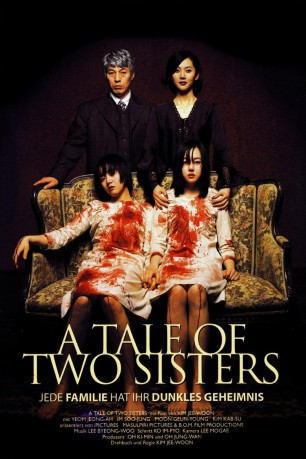

#4048 A Tale of Two Sisters
 
 IMDB-Wertung: 7.3 / 10
IMDB-Wertung: 7.3 / 10  Metascore: 0
Metascore: 0 
Es ist ein strahlender Sommertag als die Schwestern Su-mi und Su-yeon in ein abgelegenes Haus am See gebracht werden. Sie waren seit dem Tod ihrer Mutter in einer Heilanstalt und kehren nun zu ihrem Vater zurück. In der Eingangshalle wartet bereits die verhasste Stiefmutter. Su-mi, die Ältere, zeigt sich der Frau gegenüber offen feindselig, während Su-yeon geradezu ängstlich auf Abstand geht. Schon in der ersten Nacht gehen unheimliche Dinge in dem Haus vor sich, denn ein unbekanntes Wesen scheint im Verborgenen zu lauern. Diese Nacht ist aber nur der Anfang eines nicht endenden Albtraums.
Jahr: 2003
Dauer: 114 Minuten
FSK: 16
Land: Süd-Korea Studio: 3L FilmverleihTonspuren:
Untertitel: Deutsch,
Auflösung: 1080p (1920x1080) Größe: 10065 MB
Genre: Thriller, Horror, Drama, Mystery
Regisseur: Jee-woon Kim
Drehbuch: Craig Pearce
Soundtrack:
Darsteller:
- Jung-ah Yum als Eun-joo Heo, Stepmother
- Su-jeong Lim als Soo-mi Bae, Janghwa
- Geun-young Moon als Soo-yeon Bae, Hongryeon
- Kap-su Kim als Moo-hyeon Bae, Father
- Woo Ki-Hong als Sun-kyu
- Dae-yeon Lee als Su-mi's Doctor
- Seung-bi Lee als Mi-hee
- Park Mi-Hyun als Mrs. Bae, Su-mi's and Su-yeon's Mother
Datei: X:\HD-Eastern-Modern(N-Z)\Tale of Two Sisters, A (2003, FSK16, 1920x1080).mkv seit 15.07.2016
Festplatte: HD Eastern+Western
 Es gibt insgesamt 76 Filme in der Gruppe 'HD-Eastern-Modern(N-Z)'
Es gibt insgesamt 76 Filme in der Gruppe 'HD-Eastern-Modern(N-Z)'